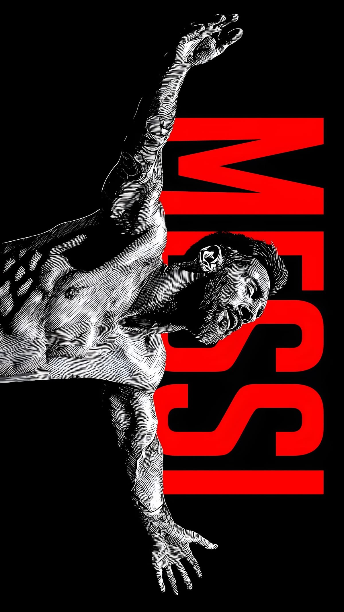
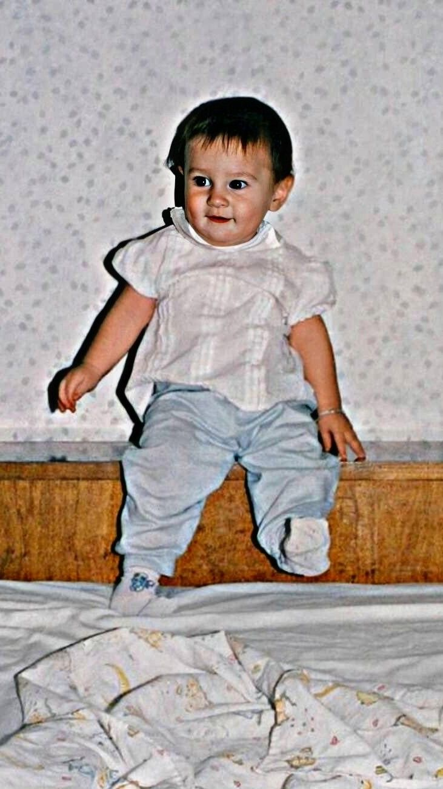
Lionel Andrés Messi enters the world on June 24th in Rosario, Argentina. The Grandoli neighbourhood would shape a legend destined to redefine the sport forever.
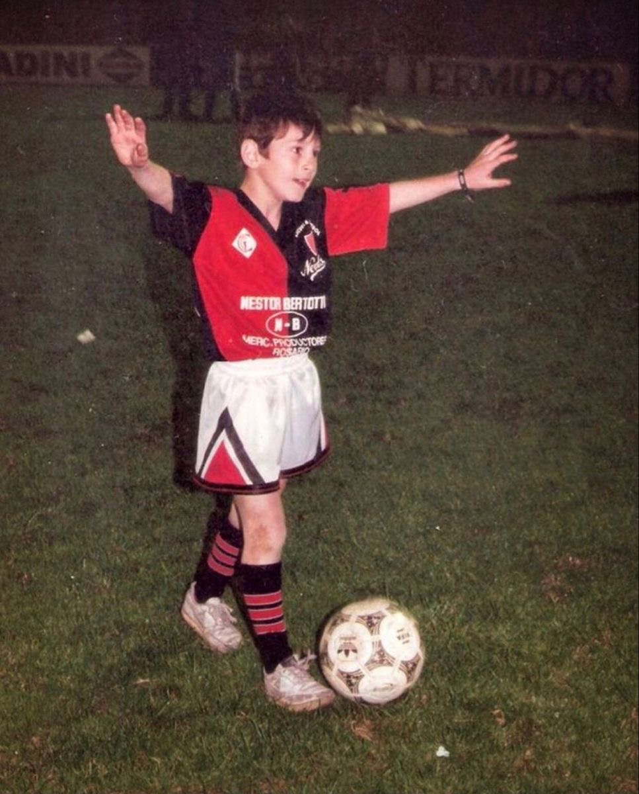
At age 6, Messi joins Grandoli club coached by his father Jorge. His supernatural gift is immediately apparent — the ball seems to obey a different set of physics when at his feet.
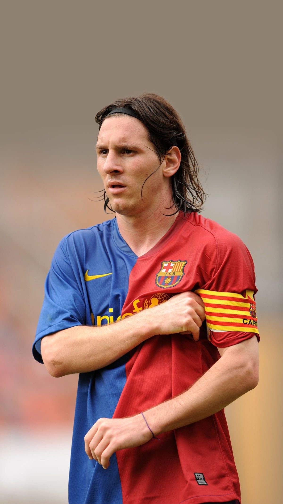
FC Barcelona spot the 13-year-old prodigy and agree to fund his growth hormone treatment — reportedly signing the deal on a paper napkin. History's greatest gamble pays infinite dividends.
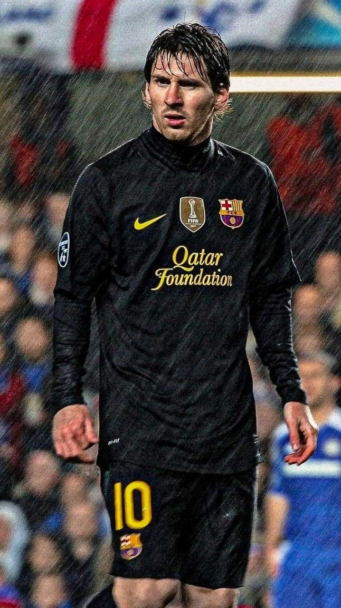
At 17 years, 3 months — the youngest player to score for Barcelona at the time. Frank Rijkaard unleashes something the world was not prepared for. An era begins.
The first of an unprecedented eight. The year of the treble. Messi scores 38 goals and provides 18 assists, winning every trophy available. The GOAT debate ends before it truly begins.
A record Gerd Müller had held for 40 years — obliterated. Messi scores 91 goals in a single calendar year, shattering the laws of human athletic possibility.
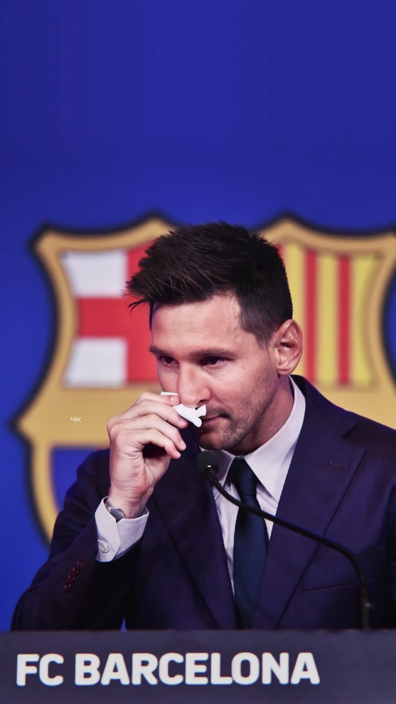
One of sport's most emotional partings. After 21 seasons and 672 goals, financial constraints force the unthinkable. An icon departs. The world mourns. A new chapter opens.
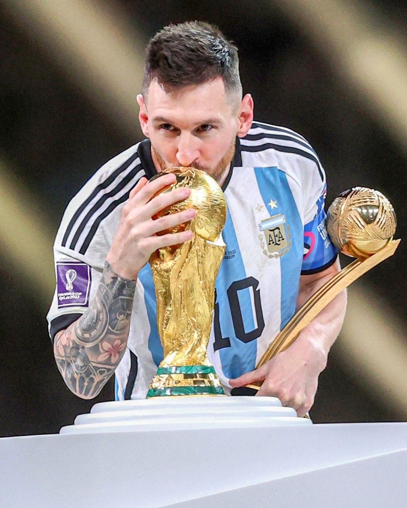
Qatar. December 18th. The greatest World Cup final in history. Messi raises the trophy after a legendary tournament. The universe aligns. The story is complete. The legacy is eternal.
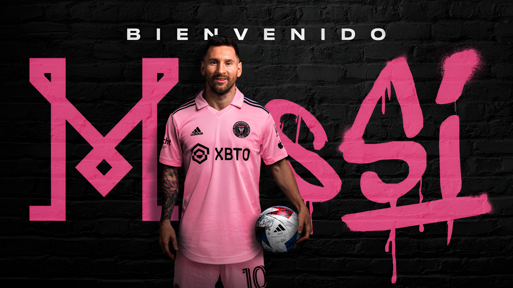
The legend rewrites American football. A city falls in love overnight. Herons FC becomes the hottest ticket in sport. The game is still beautiful. The feet still dance. The story continues.
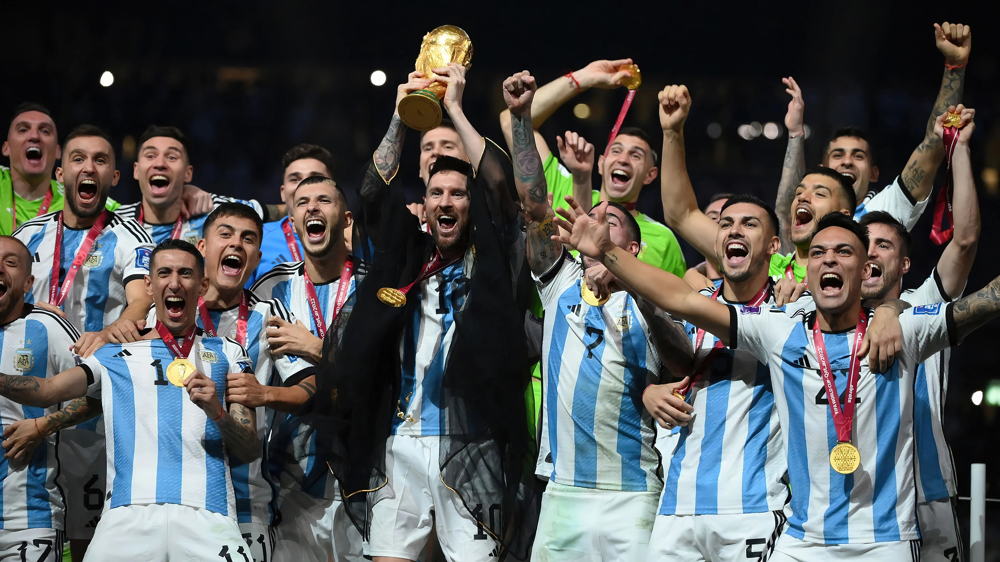
On the grandest stage of all, Lionel Messi lifted the one trophy that had eluded him — the FIFA World Cup. Argentina defeated France in a final for the ages, and the greatest of all time was finally, irrevocably, complete.
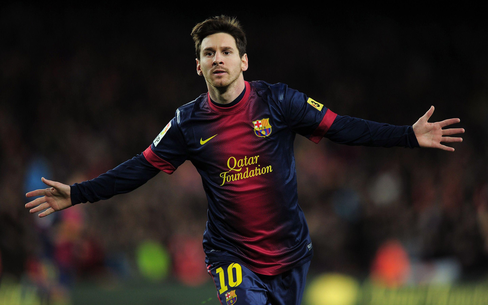
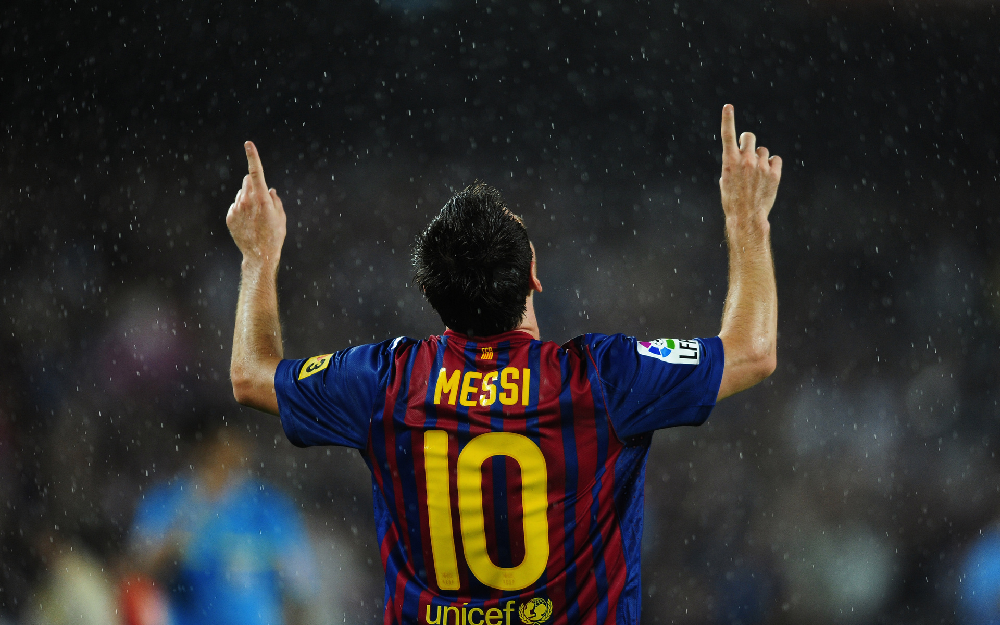
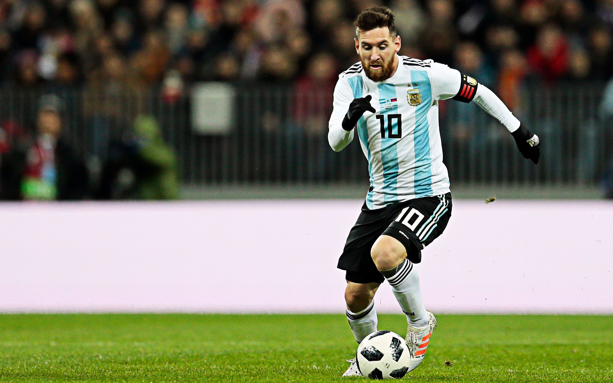
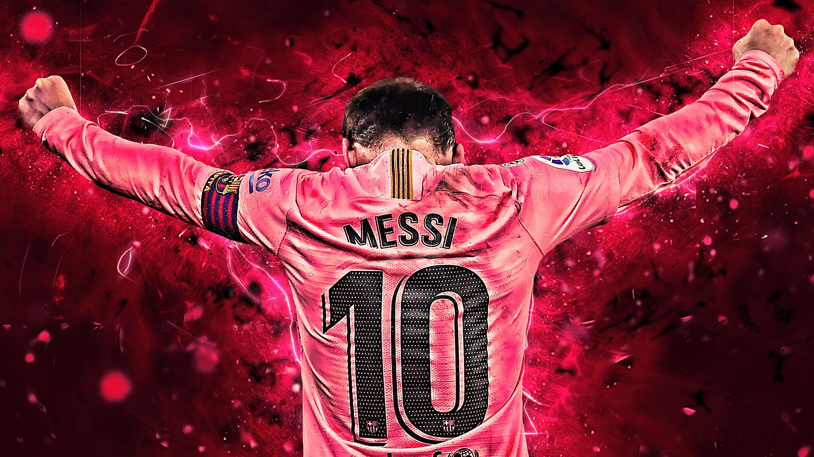